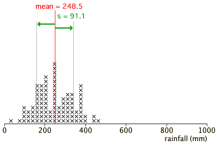

Distributions with same mean and standard deviation

The four data sets all have the same mean and standard deviation but have very different shapes and we should come do different conclusions about the data from their dot plots (or histograms).
Use the diagram to show that the mean and standard deviation on their own cannot identify outliers, clusters or skewness, all of which are important features of a distribution.
Advise students to always look at a dot plot or histogram to check that there are no such features before summarising a data set by its mean and standard deviation.